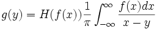
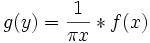
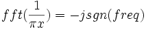

Die Hilbert-Transformation wird folgendermaßen definiert:

Dies weist darauf hin, dass die Hilbert-Transformation als Faltung betrachtet werden kann:

wobei fft(?) den schnellen Fourier-Transformationsoperator und ifft(?) den inversen schnellen Fourier-Transformationsoperator bezeichnet.
Es ist bekannt, dass
, als eine spezielle Filterung der Fourier-Transformation des Eingabesignals berechnet werden. Die Filterung ändert die Frequenzkomponenten, indem eine Phasenverschiebung von -90 Grad bei einer positiven Frequenz und eine Phasenverschiebung von 90 Grad bei einer negativen Frequenz eingeführt wird. Die Amplituden bleiben unverändert. Durch Anwenden einer inversen Fourier-Transformation bei dem Produkt erhalten wir die Hilbert-Transformation der Eingabedaten.
Nach der Berechnung der Hilbert-Transformation kann das analytische Signal von ihrer Definition abgeleitet werden.